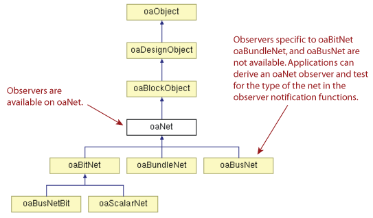
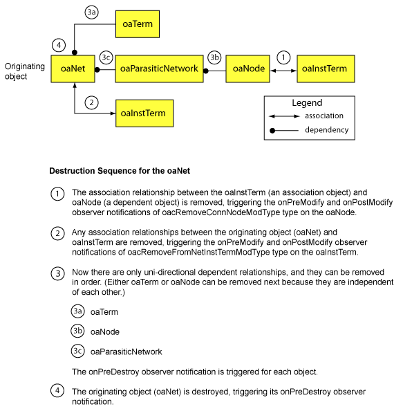

|
 |
 |
||||||
|
|
|
||||||
Topics:
An application can use OpenAccess observers to receive notification whenever certain changes occur to the state and contents of open databases. Observers notify applications of changes to a particular class of objects. For example, the oaShape observer sends notifications if a shape is created, modified, or destroyed. A complex application can use observers to ensure that its internal state is consistent with changes made by other code in the same process.
The oaObserver class is an abstract class template used as the base class for observers in OpenAccess. OpenAccess defines which classes can have observers. Observers are allowed at the level of the managed class hierarchy that maps to the most common needs of applications. For example, there is an observer for oaNet, but not for oaBitNet, oaBundleNet, or oaBusNet.

To use an observer, an application must do the following:
See the Observer<oaLibDefList> Code Example for a simple declaration and implementation of a user observer class derived from the oaObserver<oaLibDefList> template specialization.
Enabling Observers and Setting Priorities
Observers can be enabled or disabled. This can be done either during construction (see oaObserver::oaObserver) or by calling the observer's enable function). Disabled observers are not called. The enabled status of an observer can be checked by calling isEnabled.
Observers are ordered by priority. Observers with higher priority (which means those with lower priority numbers) are called first. The priority of each observer is established during construction of the observer (see oaObserver::oaObserver ).
There are two general types of observers in OpenAccess, standard observers and special observers.
Standard observers, which are derived from oaStdObserver, notify applications when objects are created, modified, or destroyed. The standard observers have the following interface:
virtual void |
onPostCreate (T *object) |
virtual void |
onPreDestroy (T *object) |
virtual void |
onPreModify (T *object, D modType) |
virtual void |
onPostModify (T *object, D modType) |
| object | Pointer to the observed object |
| modType | Type of modification made to the observed object |
Most standard observers have onPreModify and onPostModify event notification functions that pass a modTypeEnum denoting the type of modification. For these standard observers, the modType Enum column of the OpenAccess Observer Table lists the name of the modTypeEnum whose values are passed to the onPreModify and onPostModify functions. For all other observers (those with "N/A" in the right column), the onPreModify and onPostModify functions are not implemented.
Special observers provide unique notification functions for particular OpenAccess objects. For example, the oaObserver<oaLibDefList> special observer provides the following notification functions:
virtual oaBoolean oaObserver<oaLibDefList>::onPreOpenLibs(oaLibDefList *defList)
virtual void oaObserver<oaLibDefList>::onPostOpenLibs(oaLibDefList *defList)
virtual oaBoolean oaObserver<oaLibDefList>::onLoadWarnings(oaLibDefList *defList,
const oaString &msg,
oaLibDefListWarningTypeEnum type)
The special observers are as follows:
Some special observers have onPreModify and onPostModify event notification functions that pass a modTypeEnum value denoting the type of modification. For these special observers, the modType Enum column of the OpenAccess Observer Table lists the name of the modTypeEnum whose values are passed to the onPreModify and onPostModify functions. For all other observers (those with an "N/A" in the right column), the onPreModify and onPostModify functions are not implemented.
Special observers can report on a variety of events or circumstances. Some special observers provide notifications when there is conflicting data. For example, oaObserver<oaConstraintGroupDef>::onConflict issues a notification when an on-disk oaConstraintGroupDef conflicts with an existing oaConstraintGroupDef definition. There are also special observer notifications for conflicting objects or attribute values across a graph of incremental technology databases, for example, the oaObserver<oaTech>::onClearanceMeasureConflict observer. There are also special observers that report when there is a change to the state of a database, and special observers that report on binding issues.
A single action in the API can trigger a number of observer notifications on multiple objects. For example, when an oaNet is deleted, any oaTerms connected to the net are automatically deleted. The net is also disconnected from any oaInstTerms. Each of these events can trigger observer notifications.
To better understand the sequencing of observer notifications, it's useful to understand the two types of relationships between objects in the database:
The sequence of events that occur during the destruction of a managed object are the opposite of the sequence of events that occurred when the application created and built-up the object. The destruction sequence for a managed object first removes all the association relationships between objects, then destroys all the dependent objects. Observers are issued as follows:
To handle circular relationships between objects, OpenAccess must first remove the relationship between any dependent object and association objects, then remove all association relationships between the originating object and other objects. This makes it possible to handle the destruction of dependent objects in order. For example, consider the relationship of an oaNet to other connection objects in the database.

A single, high level OpenAccess function call can map to a state change that includes multiple lower level state changes (or side effects). Such changes are known as hierarchical state changes. Applications that need to understand which changes are side effects of other changes can use the onBeginCreate, onEndCreate, onBeginDestroy, and onEndDestroy observer notifications. These notifications are referred to as scoped because they span the entire range of the create() and destroy() function calls.
Consider an oaNet::destroy operation. This operation has several side effects:
The onBeginDestroy scoped observer marks the beginning of the set of scoped changes. Note that the onBeginDestroy observer notification is an object without a valid handle. Applications monitor the standard observers that occur within the set of scoped changes (between the onBeginDestroy and onEndDestroy, for example). The order of the sequence of standard observer notifications within a set of scoped changes must be maintained.
The onBeginCreate and onEndDestroy notifications are unique. They pass in a pointer to the object that owns the object for which the notifications are being sent. The owners for the OpenAccess objects (for which scoped observer notifications are available) are as follows.
| OpenAccess Object | Owning Object | Package | Notes |
| oaAnalysisLib | oaTech | oaTech | |
| oaAnalysisOpPoint | oaAnalysisPoint | oaDesign | |
| oaAnalysisPoint | oaDesign | oaDesign | |
| oaAppObject | oaObject (database) | oaBase | |
| oaAssignment | oaInst | oaDesign | |
| oaBlock | oaDesign | oaDesign | |
| oaBlockage | oaBlockObject | oaDesign | |
| oaBoundary | oaBlock | oaDesign | |
| oaBusNetDef | oaBlock | oaDesign | |
| oaBusTermDef | oaBlock | oaDesign | |
| oaCell | oaLib | oaDM | |
| oaCellView | oaLib | oaDM | |
| oaCluster | oaBlock | oaDesign | |
| oaCMap | oaBlock | oaDesign | onBeginCreate only |
| oaConnectDef | oaBlockObject (oaTerm/oaNet) | oaDesign | |
| oaConstraint | oaObject (database) | oaBase | |
| oaConstraintDef | oaSession | oaBase | |
| oaConstraintGroup | oaObject (owner/database) | oaBase | |
| oaConstraintGroupDef | oaSession | oaBase | |
| oaConstraintGroupMem | oaConstraintGroup | oaBase | |
| oaConstraintParam | oaObject (database) | oaBase | |
| oaConstraintParamDef | oaSession | oaBase | |
| oaDerivedLayerDef | oaSession | oaTech | |
| oaDerivedLayerParam | oaTech | oaTech | |
| oaDerivedLayerParamDef | oaSession | oaTech | |
| oaDesignInst | oaReticle/oaFrame | oaWafer | |
| oaDevice | oaParasiticNetwork | oaDesign | |
| oaDMFile | oaLib | oaDM | |
| oaElmore | oaReducedModel | oaDesign | |
| oaFigGroup | oaBlock | oaDesign | |
| oaFigGroupMem | oaFigGroup | oaDesign | |
| oaFrame | oaWafer | oaWafer | |
| oaFrameInst | oaReticle/oaFrame | oaWafer | |
| oaGCellPattern | oaBlock | oaDesign | |
| oaGroup | oaObject (database) | oaBase | |
| oaGroupDef | oaSession | oaBase | |
| oaGroupMember | oaGroup | oaBase | |
| oaGuide | oaBlock | oaDesign | |
| oaImage | oaReticle/oaReticleRef | oaWafer | |
| oaInst | oaBlock | oaDesign | |
| oaInstHeader | oaBlock | oaDesign | |
| oaInstTerm | oaInst | oaDesign | |
| oaLayer | oaTech | oaTech | |
| oaLayerHeader | oaBlock | oaDesign | |
| oaLibDefList | oaSession | oaDM | |
| oaLibDefListMem | oaSession | oaDM | |
| oaLPPHeader | oaBlock | oaDesign | |
| oaMarker | oaBlock | oaDesign | |
| oaNet | oaBlock | oaDesign | |
| oaNode | oaParasiticNetwork | oaDesign | |
| oaOpPoint | oaAnalysisLib | oaTech | |
| oaOpPointHeader | oaDesign | oaDesign | |
| oaParasiticNetwork | oaDesign | oaDesign | |
| oaPin | oaTerm | oaDesign | |
| oaPoleResidue | oaReducedModel | oaDesign | |
| oaProp | oaObject (owner) | oaBase | |
| oaPurpose | oaTech | oaTech | |
| oaReducedModel | oaAnalysisPoint | oaDesign | |
| oaReticle | oaWafer | oaWafer | |
| oaRoute | oaBlock | oaDesign | |
| oaRow | oaBlock | oaDesign | |
| oaScanChain | oaBlock | oaDesign | |
| oaScanChainInst | oaScanChainSet | oaDesign | |
| oaScanChainSet | oaScanChain | oaDesign | |
| oaShape | oaBlock | oaDesign | |
| oaSiteDef | oaTech | oaTech | |
| oaSteiner | oaBlock | oaDesign | |
| oaStepperMap | oaWaferDesc | oaWafer | |
| oaSubNetwork | oaParasiticNetwork | oaDesign | |
| oaTechHeader | oaTech | oaTech | |
| oaTechLayerHeader | oaTech | oaTech | |
| oaTechViaDefHeader | oaTech | oaTech | |
| oaTerm | oaNet | oaDesign | |
| oaTrackPattern | oaBlock | oaDesign | |
| oaValue | oaObject (database) | oaBase | |
| oaVectorInstDef | oaBlock | oaDesign | |
| oaVia | oaBlock | oaDesign | |
| oaViaDef | oaTech | oaTech | |
| oaViaHeader | oaBlock | oaDesign | |
| oaViaSpec | oaTech | oaTech | |
| oaViaVariant | oaDesign/oaTech | oaTech | |
| oaViaVariantHeader | oaDesign/oaTech | oaTech | |
| oaView | oaLib | oaDM | |
| oaViewType | oaSession | oaDM | onBeginCreate only |
| oaWaferDesc | oaWafer | oaWafer | |
| oaWaferFeature | oaWaferDesc | oaWafer |
To access the scoped observer notifications, derive your observer class from the oaObserver<T, oaRevisionTraits
<T>
::scopedObserverRevision> class, for example:
class myRouteObserver : public oaVersionedObserver<oaRoute, oaRevisionTraits<oaRoute>::scopedObserverRevision> >
{
myRouteObserver(oaUInt4 priorityIn);
~myRouteObserver();
virtual void onBeginCreate(oaObject *owner, oaUInt4 scopeID);
virtual void onEndCreate(oaRoute *object, oaUInt4 scopeID);
virtual void onBeginDestroy(oaRoute *object, oaUInt4 scopeID);
virtual void oaEndDestroy(oaObject *owner, oaUInt4 scopeID);
};
Then redefine the onBeginCreate, onEndCreate, onBeginDestroy, and onEndDestroy virtual functions to suit your needs. Note that you continue to have access to all the default observer notifications.
Below is a class declaration for an observer class derived from oaObserver<oaLibDefList> followed by the implementation for the derived observer's constructor and it onLoadWarnings notification function. The constructor passes the derived observer's priority and enabled settings to the parent's constructor. The onLoadWarnings notification function sends any received warning messages to cout.
This technique of declaring and implementing a user observer class that is derived from a specialized oaObserver template (in this example, derived from oaObserver<oaLibdefList>) is the typical approach for deriving and using OpenAccess observers in applications. Refer to the Observer<oaClassName> column of the OpenAccess Observer Table for a complete list of specialized oaObserver templates that can be used in this fashion.
class myLibDefListObserver : public oaObserver<oaLibDefList> {
public:
myLibDefListObserver(oaUInt4 priorityIn,
oaBoolean enabledIn = true);
oaBoolean onLoadWarnings(oaLibDefList *obj,
const oaString &msg,
oaLibDefListWarningTypeEnum type);
};
myLibDefListObserver::myLibDefListObserver(oaUInt4 priorityIn,
oaBoolean enabledIn)
: oaObserver<oaLibDefList>(priorityIn, enabledIn) // The constructor passes the
{ // priority and enabled status.
}
oaBoolean
myLibDefListObserver::onLoadWarnings(oaLibDefList *obj, // The onLoadWarnings function
const oaString &msg, // sends messages to cout.
oaLibDefListWarningTypeEnum type)
{
if (!obj) {
cout << "Error trying to open default libs.def file: " << msg << endl;
} else {
oaString libDefPath;
obj->getPath(libDefPath);
switch(type) {
case oacSyntaxErrorLibDefListWarning:
cout << "Syntax error in " << libDefPath << ": " << msg << endl;
break;
default:
cout << libDefPath << " load warning: " << msg << endl;
break;
}
}
return true;
}
Return to Programmers Guide topics

Copyright © 2001-2010 Cadence Design Systems, Inc.
All rights reserved.